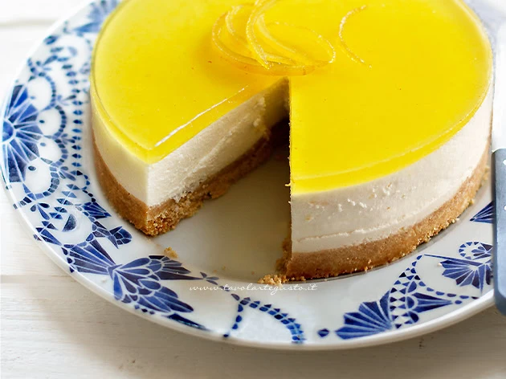

Cheesecake

Description:
Ready to face the summer? Here is the perfect dessert, and how to make it
A fresh and sweet original cheesecake, choose your favourite flavour and savour every bite
Ingredients for the cheesecake base:
- Philadelphia - 350g
- Biscuits - 250g
- Butter - 100g
- Gelatin Sheets - 1 Sheet (about 8g)
- Powdered Sugar - 65g
- Whipping Cream - 110g
Ingredients for the topping
- Raspberries - 250g
- Gelatin Sheets - 8g (as above)
- Powdered Sugar - 110g
Steps:
- For the crust, crush the cookies until you get a fine, even powder. Melt the butter, then add it to the powdered cookies and mix until well combined
- Pour the mixture in a springform pan and press it down with a tablespoon (or shape it however you like)
- In a bowl, mix the Philadelphia with the powdered sugar until smooth
- Take another bowl (bowls, bowls everywhere, you're gonna need to open a store!) fill it with a bit of cold water and let the gelatin sheet soak for 4-5 minutes.
Then move the gelatin to a small saucepan with half of the whipping cream, heat it gently while stirring with a tablespoon until fully dissolved.
- Whip the remaining half of the cream, then slowly add the warm gelatin mixture, finally mix with the base in the bowl. Pour into the springform, level the surface,
and place it in the fridge for a while
- We're almost there, now it's time for the topping. You already know how to soak a gelatin sheet, in the meantime, heat the raspberries on the stove with the
powdered sugar until they become very soft and shiny
- Take them off the heat, blend the fruit with an immersion blender (feel free to lick your finger in the meantime, just make sure no guests are around). Now you can
add the gelatin sheet and continue blending until it's fully dissolved
- Strain the solution to remove any solids
- Let it cool for at least 20/30 minutes, it needs to be just a bit less hot than your childood crush. Once ready, pour it into the springform in the fridge. Let it
chill for 3/4 hours before serving
Home